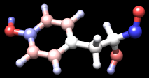
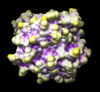

This tutorial demonstrates many uses of attributes, or properties of atoms, residues, and molecule models. Attributes can be numerical (such as atomic number), boolean (e.g., whether a residue is in a helix), or string-valued (such as atom type). Attribute values can be rendered visually and used in selection and command-line atom specification. See also the examples on the Chimera website: Mapping Sequence Conservation, Coloring by NMR Chemical Shift Perturbation
Part 1 uses a leucine zipper structure, and Part 2 uses the structure of a GTP-binding protein.
| tyrosine colored by charge |
|---|
|  |
Start Chimera by clicking or doubleclicking the Chimera icon (depending on its location). Typically, this icon will be present on the desktop. The Chimera executable can also be run from its installation location (details...).
A splash screen will appear, to be replaced in a few seconds by the main Chimera graphics window or Rapid Access interface (it does not matter which, the following instructions will work with either). If you like, resize the Chimera window by dragging its lower right corner. Show the Command Line by choosing it from the Favorites menu, and optionally, the Side View for clipping and scaling.
If you have internet connectivity, structures can be obtained directly from the Protein Data Bank. Choose File... Fetch by ID from the Chimera menu and use the resulting dialog to fetch 1zik from the PDB. If you do not have internet connectivity, download the file 1zik.pdb included with this tutorial and use File... Open to open it.
The structure is a leucine zipper formed by two peptides. Apply the “all atoms” preset, change to stick representation, and hide water:
Command: preset apply interactive 2Move and scale the structure as desired throughout the tutorial.
Command: repr stick
Command: ~disp solvent
Open the Render by Attribute tool (Tools... Structure Analysis... Render by Attribute). Make sure it is set to show the attributes of atoms. Look in the Attribute list to see the attributes available: bfactor and occupancy, which were read from the input PDB file. Choose bfactor; a histogram of the values will appear, with colored vertical bars (or thresholds) that control how the values will be mapped to color. Click Apply to color the atoms by B-factor. As expected, the atoms with higher B-factors are on the outside of the structure.
The default coloring scheme is blue to white to red, but the color mapping is easy to change. Thresholds can be dragged along the histogram with the mouse, and added or deleted with Ctrl-click. The Value and Color are shown for the most recently clicked or moved threshold. Colors can be changed individually. For example, drag the middle threshold to a lower value, click the square color well, and use the resulting Color Editor to change the color to yellow. Close the editor, and in the Render by Attribute dialog, click Apply. Drag the red threshold to the left of the yellow one and then Apply again.
The colors can also be changed collectively, by choosing a Palette in the Render by Attribute dialog. Choose the Palette named Cyan-Maroon (cyan to white to maroon), then click Reverse threshold colors for coloring from maroon to white to cyan. Move the thresholds if you wish and Apply again.
Note that the histogram includes the B-factor values of the waters even though they are not displayed. Display waters with B-factors less than 75:
Command: disp solvent & @/bfactor<75Show ribbons:
Command: ribbonNext, change to the attributes of residues in the Render by Attribute dialog. Available residue attributes include kdHydrophobicity and average bfactor and occupancy. The latter two are residue averages over the atomic values. Choose kdHydrophobicity, the Kyte-Doolittle hydrophobicity scale for amino acids. The values will be displayed in the histogram: negative for polar residues, positive for hydrophobic residues.
Hydrophobicity could be shown with color, but for variety, we will show it with “worms,” modified ribbons that vary in radius. In the Render by Attribute dialog, change from Colors to Worms. The values are still shown in a histogram, but now the thresholds have a Worm radius instead of a color. The thresholds can be added, deleted, and moved like before, and the Worm radius can be changed. By default, the more hydrophobic residues will be shown with a fatter worm (a larger worm radius). Change the mapping as desired and click Apply.
The worms show that the most hydrophobic residues tend to face the interior of the structure. To return to a normal ribbon instead of a worm, change the Worm style to non-worm and click OK (which is equivalent to Apply plus Close).
Additional hydrophobicity scales are available as attribute assignment files.
Some Chimera tools create new attributes. For example, the Add Charge tool (also implemented as the command addcharge) assigns partial charges as an atom attribute named charge. Charge values from Amber are used for standard amino acids and nucleotides.
Use the “all atoms” preset again:
Command: preset apply int 2Next, add hydrogens and assign atomic partial charges:
Command: addhAbove, attribute values were shown with color and worms; another approach is to display the values as atom labels. Since it would be too confusing to show all of these labels at once, only show them for the atoms in a single residue:
Command: addcharge
Command: alias myres :tyr.aThe number of decimal places and whether plus signs should be used for positive values can be specified, for example:
Command: show myres
Command: focus
Command: labelopt info charge
Command: label myres
Command: labelopt info %(charge)+.2f
Command: lab myres
New attributes can be used in the command line just like built-in attributes. For example, show the atoms with charge less than –0.4 as balls:
Command: repr bs @/charge<–0.4Finally, remove the labels, change to ball-and-stick, and color atoms by their charge values:
Command: ~labThe result should look something like the figure. Rangecolor is the command alternative to Render by Attribute for coloring.
Command: repr bs
Command: rangecol charge –0.8 red 0 white 0.8 blue
Close the model:
Command: close 0Go on to Part 2 below, OR terminate the Chimera session with the following command:
Command: stop
| 121p colored by convexity |
|---|
|  |
Begin with Chimera started and the Command Line (and optionally the Side View) opened as described at the beginning of Part 1.
If you have internet connectivity, use a command to fetch the PDB structure 121p:
Command: open 121pIf you do not have internet connectivity, download the file 121p.pdb included with this tutorial and use File... Open to open it.
The structure is H-ras, a small GTP-binding protein, along with a bound GTP analog, a Mg++ ion, and some water. Move and scale the structure as desired throughout the tutorial.
Use the ribbons preset:
Command: preset apply int 1This shows a ribbon rainbow-color-coded from blue at the N-terminus to red at the C-terminus, plus atoms in or near binding sites. Delete the water (most of which is hidden) and label the residues near the ion:
Command: delete solventThe active site Mg++ ion is coordinated by Ser 17, Thr 35, and phosphonate oxygens in the GTP analog, which is named GCP. Color the ligand GCP yellow, remove the residue labels, and zoom back out:
Command: focus ions z<3.5
Command: rlabel ions z<3.5
Command: color yellow ligandIn HOMSTRAD, this protein is classified in the GTP-binding protein family. Download the alignment file homstrad-gtp.pir (originally from HOMSTRAD, now included with this tutorial) and open it with File... Open.
Command: ~rlabel
Command: focus
The alignment is shown in a separate Multalign Viewer window. A colored rectangle under the sequence name 5p21 indicates association of that sequence with the structure. If the sequence window later becomes obscured, it can be raised by choosing MAV - homstrad-gtp.pir... Raise from near the bottom of the Tools menu.
When a structure is associated with a sequence alignment in Multalign Viewer, its residues are assigned conservation attributes. From the Multalign Viewer menu, choose Structure... Render by Conservation. This opens the same Render by Attribute tool used in Part 1, except that now it shows the attribute of residues named mavConservation. The “mav” part of the name is shorthand for Multalign Viewer, and “Conservation” indicates that the values correspond to what is shown in the Conservation line of the sequence window. By default, the value for a column is the fraction of sequences with the most common residue type at that position, for example: 0.7 where 7 of 10 sequences have the same type of residue, 0.1 where each of the 10 has a different type. (Different calculation methods are available, see Preferences... Headers in the Multalign Viewer menu.)
In Render by Attribute, use Colors and adjust the color mapping as desired before clicking Apply. The coloring shows that many positions in or near the binding site are highly conserved.
The Render by Attribute dialog also lists the residue attribute mavPercentConserved. Whereas mavConservation changes along with the Conservation calculation method, mavPercentConserved is always the percentage of sequences with the most common residue type at that position (same as the Conservation default, except expressed as a percentage rather than a fraction).
Select residues within 6 Å of the ligand:
Command: select ligand z<6The selection is shown with green boxes on the sequence alignment.
Like other attributes, mavConservation and mavPercentConserved can be used in commands:
Command: select ligand z<6 & :/mavPercentConserved>80This selects a smaller set of residues than before, only those both within 6 Å of the ligand and meeting the conservation criterion. Clear the selection (Select... Clear Selection is one way) and Quit from Multalign Viewer.
Show the molecular surface of the protein:
Command: surfaceBy default, the surface colors match the underlying atom colors. It is again evident that highly conserved residues line the binding pocket. Generating a molecular surface automatically creates the atom attributes areaSAS and areaSES, solvent-accessible and solvent-excluded surface areas in the context of the structure. For example, the values of both attributes are zero for atoms buried in the protein interior. What Chimera shows is the solvent-excluded molecular surface, composed of probe contact, toroidal, and reentrant surface. The solvent-accessible surface (not displayed) is farther out from the molecule, the surface traced out by the probe center.
If Render by Attribute is not already open, open it (Tools... Structure Analysis... Render by Attribute) and see what attributes are present for atoms. If areaSAS and areaSES are not yet listed, show them with Refresh... Menus. The histograms show the ranges of values obtained for the structure.
Open the Attribute Calculator (Tools... Structure Analysis... Attribute Calculator). Calculate a new attribute named convexity for atoms using the Formula
atom.areaSAS/atom.areaSESValues of convexity > 1 represent convex areas, while values < 1 represent concave areas. Click OK to perform the calculation and assignment. A warning message will appear because some atoms have an areaSES of zero, resulting in a divide-by-zero error. However, just close the warning dialog; the attribute has been assigned correctly for the atoms with nonzero areas.
Finally, show the convexity values with color on the protein surface. In the Render by Attribute dialog, make sure that the histogram is showing the new attribute of atoms named convexity. In the Colors section, use three thresholds:
The surface can be smoothed by increasing its vertex density from the default of 2.0, for example:
Command: setattr s density 5
When finished, end the Chimera session:
Command: stop really